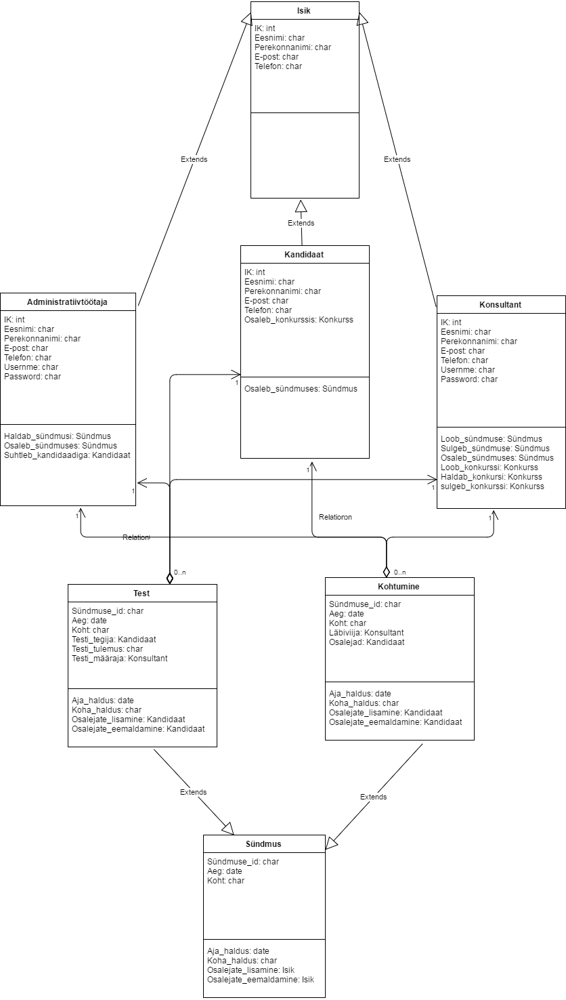

OOA lähenemine
Objektid
| Objekt | Identifikaator | Käitumine | Olekud |
|---|---|---|---|
| Konkurss | Konkurssi identifikaator | Kandidaatide valimine | Aktiivne Mitteaktiivne Arhiveeritud |
| Test | Testi identifikaator | Kontrollib testi tegija oskusi | Tegemisel Ootel |
| Kandidaat | Isikukood | Konkurssil kandideerimine | Kandideeriv Mitte sobilik |
| Konsultant | Isikukood | Kandidaatide valimine | Juhib konkurssi Ei juhi konkurssi |
| Intervjuu | Intervjuu identifikaator | Konsultandi ja kandidaadi kohtumine | Tulemas Olnud |
Tegijad
| Tegija | Tegevus |
|---|---|
| Klient | Tellib konkurssi |
| Kandidaat | Osaleb konkurssil Teeb testi Osaleb intervjuus |
| Konsultant | Korraldab konkurssi Osaleb intervjuus Valib kandidaate |
| Administratiiv töötaja | Lepib kokku intervjuu ajad Abistab testide tegemisel |
Kasutajalood
- Konsultandina soovin avada uue konkurssi
- Konsultandina soovin määrata kandidaatidele testi
- Konsultandina soovin määrata kandidaadile intervjuud
- Kandidaadina soovin teha testi
- Kandidaadina soovin võta osa intervjuus
Stsenaariumid
1. Konsultandina soovin avada uue konkurssi
Kui leping on allkirjastatud, konsulatant logib CRM-i sisse ning avab uue konkurssi, pannes kirja selle kirjeldus, tööandja ootused ja pakkumised, kestvuse, eelarve, meediakanalid reklaami jaoks.
2. Konsultandina soovin määrata kandidaatidele testi
Konsultant logib CRM-i, vaatab läbi konkurssi kandideerijate nimekirja, valib sobiva hulga paremaid kandidaate ja määrab neile vajalikud testid. Seejuures, kui kandidaat on hiljuti juba teinud testi, siis ta ei pea seda enam tegema, ning talle ei määrata testi. Administratiivtöötaja lepib kandidaadiga ajas, millal ta saab tulla testi tegema.
3. Konsultandina soovin määrata kandidaadile intervjuud
Konsultant logib CRM-i ning vaatab kandidaatide testide tulemusi, valib paremaid ning avaldab soovi nendega kohtuda, pakkudes talle sobilikud ajaj ja kohad. Seejärel administratiivtöötaja lepib kandidaatidega kokku kohtumise aja ja koha, niimoodi, et see sboiks nii konsultandile, kui ka kandidaadile.
4. Kandidaadina soovin teha testi
Kandidaat saab teate, et edasiseks kandideerimiseks ta peab sooritama teste. Administratiivtöötajaga lepib ta ajas, millal ta saab tulla testi teha. Kandidaat õigeaegselt ilmub kohale ja teeb testi, mille järele jääb ootama testi tulemusi ning teate, kas ta osutub valituks järgmiseks konkurssi etapiks või mitte. Testide staatus, sooritamisaeg ja tulemused läevad CRM-i kirja.
5. Kandidaadina soovin võta osa intervjuus
Kandidaat saab teate, et konsultant soovib temaga kohtuda. Administratiivtöötajaga lepivad nad ajas ja kohas, mis sobiks nii kandidaadile, kui ka konsultandile. Intervjuu aeg, koht ja staatus lähevad CRM-i kirja.
Klassid
| Klass | Kriteerium |
|---|---|
| Isik | Abstract superklass |
| Kandidaat | Isik childclass |
| Konsultant | Isik childclass |
| Administratiivtöötaja | Isik childclass |
| Sündmus | Abstract superclass |
| Test | Sündmus childclass |
| Kohtumine | Sündmus childclass |
| Konkurss |
Klassidiagramm

Lisaiteratsiooni vajadus
Kuna projekti arendav meeskond on üsna väike, siis lisaiteratsiooni jaoks ei ole piisavalt ajalist resurssi.